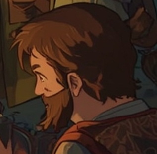

☕ Eldon Tealeaf / Human Bard or Sage (Lvl 3)

🧾 Summary:
Once a librarian, Eldon is a master of words who blends knowledge with magic. He loves listening to everyone's stories. Brewing tea and reciting poetry are his forms of meditation. When needed, he can stop conflicts with his words.
Role: Support / Charisma Face
🛡️ Abilities:
- Perform (no lute but good coffee/tea presentation)
- Persuasion, Insight
- Minor spells: Prestidigitation, Charm Person
🪓 Equipment:
- Cup, thermal teapot (clearly visible in the image)
- Travel clothes and magical cloak
🎲 Hobbies:
- The art of brewing herbal tea
- Journaling
- Drawing portraits of camp companions
- Telling strange stories (half of them made up)
Note: "My face smiles, my words enchant. Need to bargain with the guild? I'll do the talking."
© 2025 Fantasy Adventures - All Spells Reserved | Created by Umut Kurt